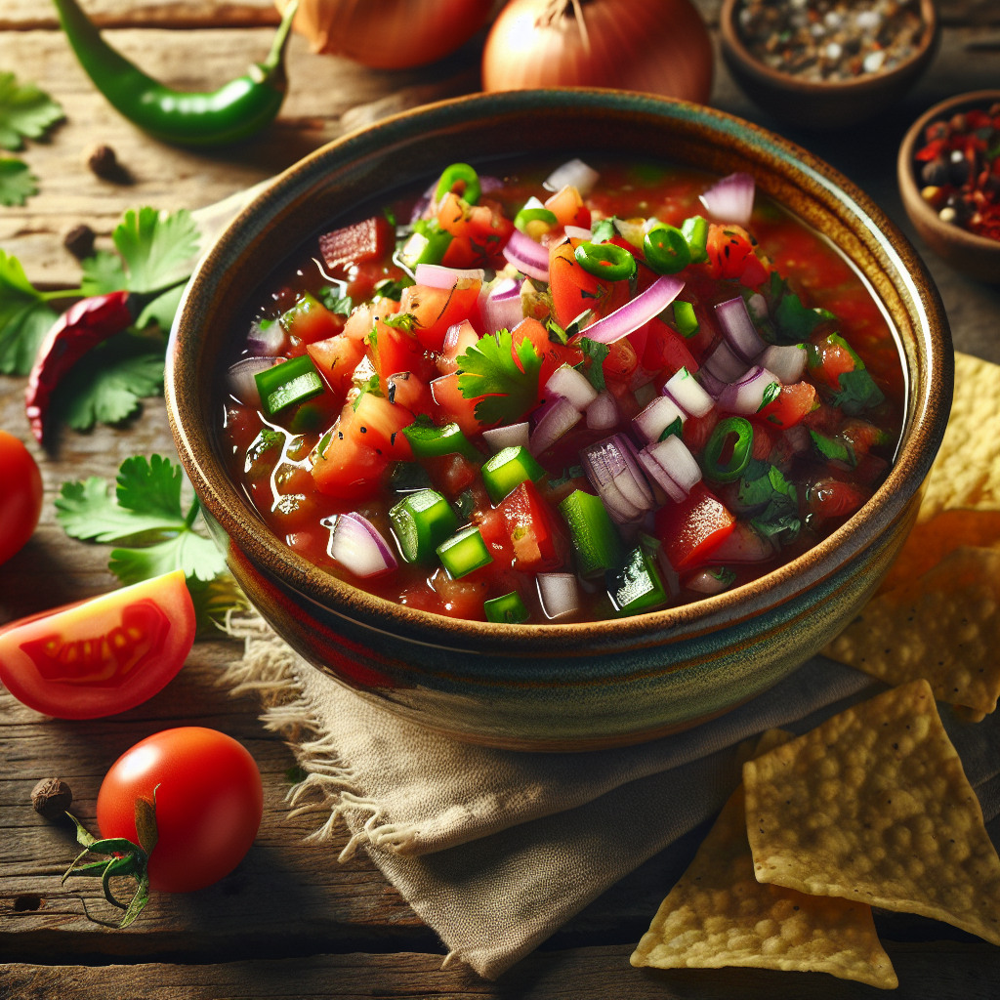

Salsa Recipe

A simple and delicious recipe for homemade salsa
Ingredients
- 4 ripe tomatoes, diced
- 1 small red onion, finely chopped
- 2 cloves garlic, minced
- 1 jalapeño pepper, seeded and finely chopped (adjust to taste)
- 1/4 cup fresh cilantro, chopped
- Juice of 1 lime
- Salt and pepper to taste
- 1/2 teaspoon ground cumin
- 1/2 teaspoon sugar
- 1 tablesppon olive oil
Steps
- Dice the tomatoes and finely chop the red onion.
- Mince the garlic and finely chop the jalapeño pepper. If you prefer less heat, remove the seeds and membrane from the jalapeño before chopping.
- Chop the fresh cilantro and juice the lime.
- In a large bowl, combine the diced tomatoes, chopped red onion, minced garlic, and chopped jalapeño pepper.
- Add the chopped cilantro and lime juice to the bowl.
- Add salt and pepper to taste.
- If using, add the ground cumin and sugar.
- Drizzle with olive oil if you prefer a richer texture.
- Mix all the ingredients thoroughly until well combined.
- Taste and adjust seasoning if necessary.
- Cover the bowl and refrigerate for at least 30 minutes to allow the flavors to meld together.